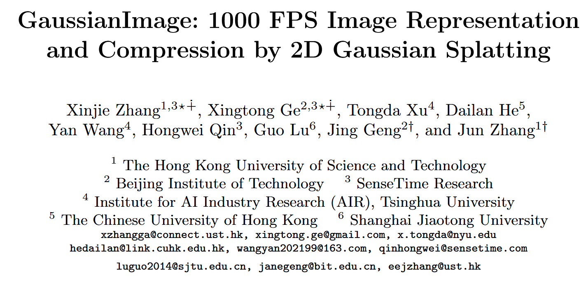

3D Gaussian Splatting for Real-Time Radiance Field Rendering#
Bernhard Kerbl, Georgios Kopanas, Thomas Leimkühler, George Drettakis
Inria, Université Côte d’Azur, Max-Planck-Institut für Informatik
Published in ACM Transactions on Graphics, SIGGRAPH 2023
Background#
In recent years, Neural Radiance Fields (NeRFs) [Mildenhall et al. 2020] have emerged as a powerful representation for synthesizing novel views of a scene. NeRF models use multi-layer perceptrons (MLPs) and volumetric ray marching, allowing them to model fine geometry and view-dependent color. However, NeRFs are notoriously slow — rendering even a single image can take seconds, and training can take days.
Many methods have tried to accelerate NeRFs:
Mip-NeRF360 [Barron et al. 2022] achieves state-of-the-art quality but takes ~48 hours to train.
Plenoxels [Fridovich-Keil et al. 2022] and InstantNGP [Müller et al. 2022] significantly reduce training time, but still struggle to render at real-time speeds for 1080p images.
These trade-offs raise a central question:
💡 Can we achieve both real-time rendering and high quality radiance field representation — without sacrificing speed or memory?
The Core Idea#
This paper proposes a new paradigm: 3D Gaussian Splatting.
Instead of voxel grids or MLPs, the authors represent scenes using a set of anisotropic 3D Gaussians in world space. These Gaussians can be:
Projected to 2D splats for efficient rasterization,
Differentiably optimized,
Interleaved with adaptive density control, adding/removing Gaussians as needed.
Key Formulae:#
3D Gaussian definition (center $\mu$, covariance $\Sigma$):
$$ G(\mathbf{x}) = e^{ -\frac{1}{2} (\mathbf{x} - \mu)^T \Sigma^{-1} (\mathbf{x} - \mu) } $$
Covariance as ellipsoid with rotation $R$ and scaling $S$:
$$ \Sigma = R S S^T R^T $$
Volumetric Rendering Equation (NeRF-like form):
$$ C = \sum_{i=1}^{N} T_i \alpha_i \mathbf{c}_i $$
where:
$\alpha_i = 1 - \exp(-\sigma_i \delta_i)$
$T_i = \prod_{j=1}^{i-1} (1 - \alpha_j)$
This equation is also compatible with alpha-blending in point-based rendering. Unlike NeRF, there’s no need to march along rays or sample dense volumes.
Projection to 2D for rasterization (via Jacobian $J$ and camera transformation $W$):
$$ \Sigma’ = J W \Sigma W^T J^T $$
This allows rendering using tile-based sorting, enabling real-time rendering and differentiability.
Contributions#
This paper introduces:
A novel scene representation using anisotropic 3D Gaussians optimized from SfM points.
An interleaved optimization strategy with adaptive Gaussian densification (clone/split).
A real-time differentiable rasterizer that allows fast training and high-quality rendering.
References#
Mildenhall et al., NeRF: Representing Scenes as Neural Radiance Fields, ECCV 2020
Barron et al., Mip-NeRF360: Unbounded Anti-Aliased Neural Radiance Fields, CVPR 2022
Fridovich-Keil et al., Plenoxels: Radiance Fields without Neural Networks, CVPR 2022
Müller et al., InstantNGP: Instant Neural Graphics Primitives, SIGGRAPH 2022
Zwicker et al., EWA Volume Splatting, IEEE Vis 2001